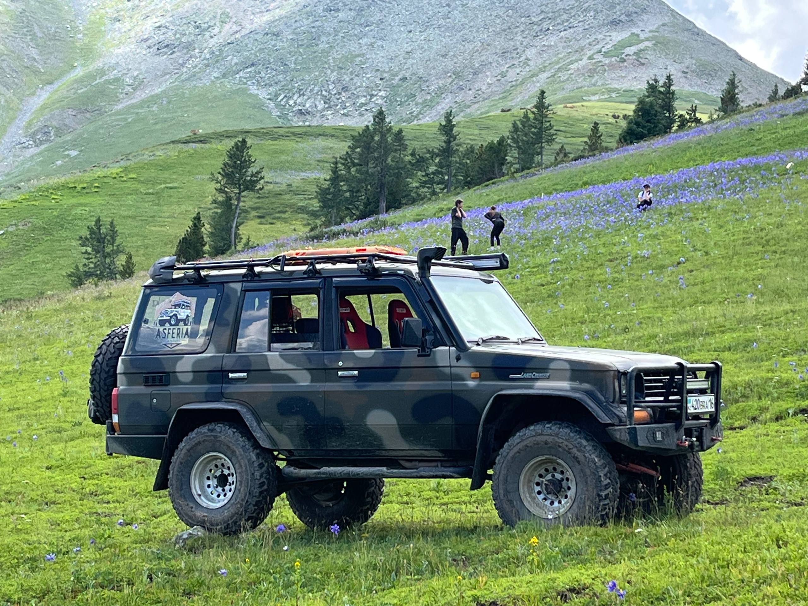

Most travel agencies in Central Asia work one of two ways: they own vehicles and run their own tours, in which case they're limited to what they own; or they're brokers who resell everything from local suppliers with a markup. We run a hybrid model that's better suited to a region like East Kazakhstan, where the interesting parts of a trip require different types of expertise. This is how it works.
What "full-service" means for us
The idea is simple: one booking, one point of contact, an entire trip organized end-to-end. That includes everything from the moment you land in Kazakhstan to the moment you fly out.
- Airport pickup at Ust-Kamenogorsk, Astana, or Almaty
- Accommodation across the region — city hotels, mountain guesthouses, wilderness camps
- Wilderness expedition segments — our own jeeps, our own guides
- Cultural and city segments — museums, restaurants, guided walks, interpreters where needed
- Optional add-ons: horseback riding, Russian banya, fishing guides, mountain skiing in winter
- Border zone permits and national park passes
- Interpretation between English and Russian/Kazakh wherever staff don't cover it directly
What we do not do: sell you a package and disappear. Someone from our team is reachable — WhatsApp, phone, in person — from before departure through return.
The two things we own outright
For the wilderness segments — which are the reason most people come to East Kazakhstan — we run our own operation from top to bottom. This is deliberate.
Vehicles
We operate a fleet of prepared 4WDs — Toyota Land Cruisers and Nissan Patrols, chosen because they handle the specific conditions of Kazakh mountain roads: river fords, rocky ascents, long distances at low speed. Every vehicle is maintained on our schedule, not on a rental company's schedule. This matters because what breaks on the Katon-Karagay backcountry cannot be fixed on the Katon-Karagay backcountry.
Guides
All our expedition guides are certified, employed by us directly, and have worked the routes we run for multiple seasons. Not freelancers we call in when a booking comes. This is the single biggest quality-control point in adventure travel. A guide who has driven the Austrian Road forty times reads it differently from one on their third trip.
What we coordinate through partners
For everything outside the wilderness core, we work with a network of trusted suppliers built over three years of operations. We don't try to own accommodation, restaurants, or urban logistics — we work with the people who already do those things well in East Kazakhstan.
Accommodation network
We book directly with guesthouse families in Katon-Karagay and Berel — some of whom have hosted our groups since our first season. In Ust-Kamenogorsk and Ridder, we have preferred rates at four hotels ranging from 3-star business standard to boutique. On expedition days, wilderness camps are our own — but the framing days at either end use the partner network.
Cultural and craft partners
The Berel Museum has a curator willing to open the collection outside standard hours for groups we bring. The Museum of Regional Studies in Ust-Kamenogorsk works with us on Scythian-era private tours. Local artisan bee-keepers and mare-milk producers in the Katon-Karagay valley let us stop in as part of the itinerary — not as a staged experience, but as an authentic visit that we've built a relationship for.
Add-on services
Horseback riding in Berel, banya in Katon-Karagay, fishing on the Berel drainage, helicopter transfers to remote points, rafting on the Bukhtarma. None of this is our core business, but all of it is available on request through partners we vet directly. If a guest wants to spend a day on horseback while others hike, we make it happen.

Why we built it this way
Early on, we tried to do everything ourselves. It didn't scale, and it produced worse outcomes for guests. There are things we can do better than anyone in East Kazakhstan — running wilderness expeditions, driving hard roads, keeping small groups fed and safe in remote camps. And there are things that local families, museum curators, and specialized service providers do better than we ever could. Pretending otherwise is how you end up with mediocre tours that touch a lot of things without doing any of them well.
Full-service, for us, means we take responsibility for the guest experience end-to-end — but we assemble that experience from the best available components. Some of them are ours. Most of them are partners. All of them we're accountable for.
Our mission
Something we don't often say out loud: we're not trying to be the biggest tour operator in Kazakhstan, or to push volume. What we're trying to do is make East Kazakhstan visible and accessible to international travelers who would otherwise never find it.
The region has world-class wilderness that most of the world doesn't know exists. The people who live here — the guides we work with, the guesthouse families in Berel, the museum curators in Ust-Kamenogorsk — have knowledge that deserves an audience. Building a small, focused travel company that connects those two sides is the point.
We're based in Ridder and Ust-Kamenogorsk, we've been running expeditions since 2023, and we plan to do this for a long time.
Who we work well with
Not every traveler is a good fit for our format, and we'd rather say that upfront than have someone booked into an experience that doesn't match their expectations. We work best with people who:
- Prioritize experience quality over checklist completion
- Are comfortable with small groups (typically 4–12)
- Accept that some parts of any Kazakh Altai trip will involve long driving days on rough roads
- Are okay with modest accommodation on wilderness segments (tents, guesthouses) in exchange for access to places 5-star operators cannot reach
- Value working with a locally-owned operator over an international brand
If that describes you, we'd be a good match. If your priorities are different — luxury standards throughout, tight day-by-day scheduling, English-only staff at every touchpoint — there are other operators in Kazakhstan who serve that market well and we can recommend them.
Plan a trip
with us
Tell us what you're looking for — dates, group size, interests. We'll come back with a proposal within two business days. No obligation.
Or start with the region: our East Kazakhstan travel guide covers the destination in depth, and the Altai Mountains guide zooms into Katon-Karagay National Park specifically.